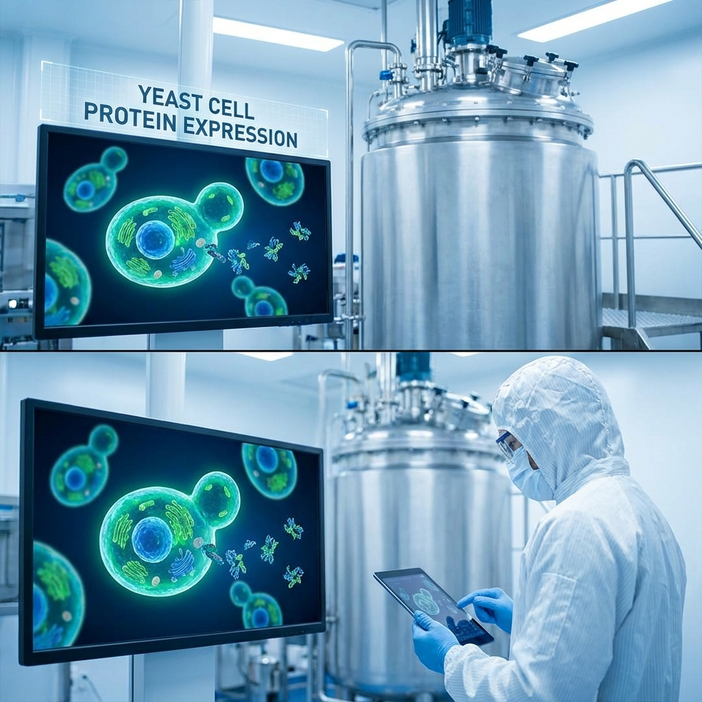

MIT chemical engineers have achieved something that sounds like science fiction: their AI can now design entirely new proteins that have never existed in nature. The BoltzGen model doesn't just analyze proteins—it creates them, potentially compressing drug discovery timelines from years to months.
Released in October 2025 and now gaining widespread adoption, BoltzGen represents a fundamental shift in how we approach protein-based drug design. Traditional methods work with existing proteins found in nature. BoltzGen generates novel protein binders from scratch—molecules optimized for specific therapeutic targets that evolution simply never produced.
From Prediction to Generation
MIT's earlier Boltz-2 model, released in June 2025, could predict how drug molecules bind to protein targets—already a thousand times faster than traditional physics-based simulations. BoltzGen goes further: it generates entirely new proteins designed for specific binding tasks.
The difference is profound. Prediction works with known molecular structures. Generation creates the unknown. BoltzGen can design proteins that address disease mechanisms that natural proteins can't touch, opening therapeutic possibilities that were previously inaccessible.
Pichia-CLM: Optimizing the Factory

Alongside BoltzGen, MIT developed Pichia-CLM—a language model that optimizes the genetic code of industrial yeast for protein manufacturing. By predicting the most effective codons, the model boosts efficiency for producing proteins including human growth hormone and monoclonal antibodies used in cancer treatment.
The economic implications are substantial. Protein-based drugs are notoriously expensive to manufacture. Pichia-CLM's optimization could reduce production costs significantly, making these therapies more accessible to patients who need them.
The Antibiotic Resistance Challenge
Professor James J. Collins' lab at MIT is applying these AI capabilities to one of humanity's most pressing health challenges: antibiotic resistance. In February 2026, the lab received funding to design 15 new antibiotic preclinical candidates using generative AI.
The approach is elegant. Rather than searching for new antibiotics in nature—a strategy that's hitting diminishing returns—the AI designs novel antibiotic molecules optimized to evade bacterial resistance mechanisms. It's a race against evolution, fought with algorithms.
BioPipelines: Open-Source Workflows
In March 2026, MIT released BioPipelines—an open-source Python framework under the MIT license that helps researchers define multi-step computational workflows for protein engineering. The framework integrates over 30 tools for structure generation, sequence design, structure prediction, and compound screening.
This open-source approach accelerates the entire field. Researchers worldwide can now build on MIT's infrastructure, sharing improvements and discoveries. The competitive advantage shifts from who has the best tools to who can use them most creatively.
Industry Adoption
Pharmaceutical companies are paying attention. The field of AI-driven drug development is reaching an inflection point, with companies like Earendil Labs showing significant clinical progress and securing substantial funding. MIT's models are becoming foundational infrastructure for an industry desperate for innovation.
The biotech sector is investing heavily in data infrastructure and scientific modeling capabilities to integrate AI into research and development. The winners will be companies that can effectively combine biological expertise with computational power.
The Bigger Picture
MIT's protein AI work represents a broader trend: the application of generative models to physical design problems. Just as language models generate text and image models generate pictures, protein models generate molecular structures. The underlying principle—learn patterns, then create new instances—is transforming multiple scientific disciplines.
For patients, this means faster access to better treatments. For researchers, it means tools that amplify their capabilities. For the pharmaceutical industry, it means a fundamental restructuring of how drugs are discovered and developed.
The molecules coming out of MIT's AI systems never existed in nature. Soon, they might be keeping people alive.